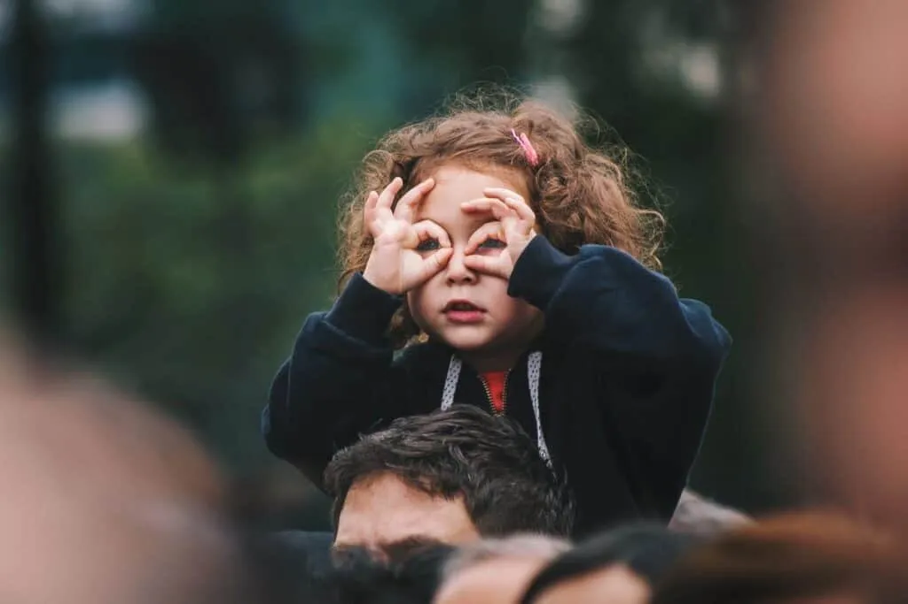

MIRAR V/S OBSERVAR
La velocidad al vivir se hace cada vez más presente en nuestro día a día, anulando la maravillosa posibilidad de atender a pequeños pero grandes detalles que ocurren a nuestro alrededor. La rapidez que el sistema pretende que instauremos en nuestra vida, no nos abre la puerta al disfrute del presente, del aquí y el ahora, focalizando nuestra mente netamente a lo que vendrá, en las soluciones, reflexiones en torno al futuro.
¿Porqué? ¿Porqué los medios de comunicación, el comercio, la educación pretende que nos desarrollemos en la rapidez? Porque en la calma, en el silencio, en el escuchar y en el observar nos encontramos con nosotros/as mismos/as y eso al sistema no le interesa. No le interesa que como seres humanos, cuidemos de nuestro mundo interior, que seamos conscientes, ya que conscientes, cuestionamos y reflexionamos sobre muchas cosas.
Me centraré en la dualidad de mirar v/s observar.
La misma rapidez que nos apremia, nos imposibilita muchas veces observar, quedándonos sólo en el mirar, una acción más liviana… El observar es ir más allá, detenerse en los detalles, en lo que existe más allá de las formas establecidas y avanzar hacia todas las reflexiones que podemos hacer frente al acto de observar.
¿Porqué es importante educarlo en la infancia?
- Porque observando pueden reflexionar y construir conclusiones.
- Observando nutren su pensamiento.
- Les permite conocer de manera consciente el entorno que los y las rodea.
- Valoran similitudes y diferencias en torno a estética, opiniones, conclusiones, realidades.
- Desarrollan la percepción visual.
- Favorece el proceso de la atención sostenida.
- Les permite conocer la importancia de observar para observarnos y mucho más.
¿Cómo hacerlo en tus clases de yoga?
- Generando espacios de observación con el grupo: al saludarnos, observamos cómo llegamos hoy, que colores traemos, además de observarnos a los ojos.
- Articulando actividades que permitan concentrar la atención en un elemento, por ejemplo: todos y todas observamos un reloj de arena, el movimiento de la llama de una vela, una planta, etc.
- Permitiendo observarse a sí mismos/as, mediante el uso de un espejo y que luego puedan plasmarse en una acción plástica: dibujo, creación con plastilina y/o greda, etc.
- Permitir que inventen historias donde tengan que sólo contar con el cuerpo para que el resto del grupo observe e imite posturas que son parte de la historia.
- Jugar a practicar posturas con diferencias: les ofreces una caja con accesorios (anillos, collares, pulseras, pinches, prendedores, etc? para que cada niño/a elija uno de ellos para incorporar en sus vestimentas y cuerpos. Esto debe hacerse sin que el resto se de cuenta del accesoria elegido. Primero, muestran su postura sin el objetivo elegido para luego incorporarlo y el grupo deberá identificarlo.
Peggysue.S.S